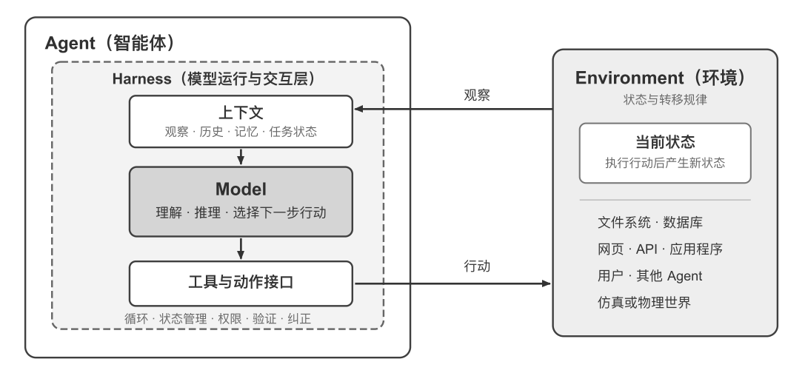
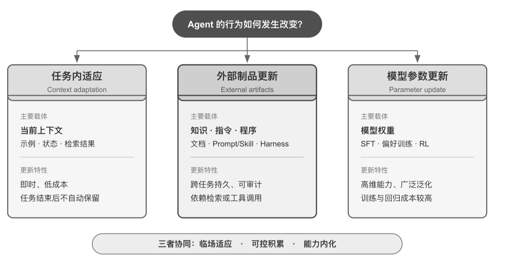
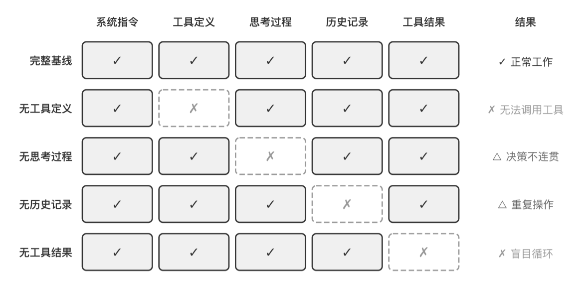
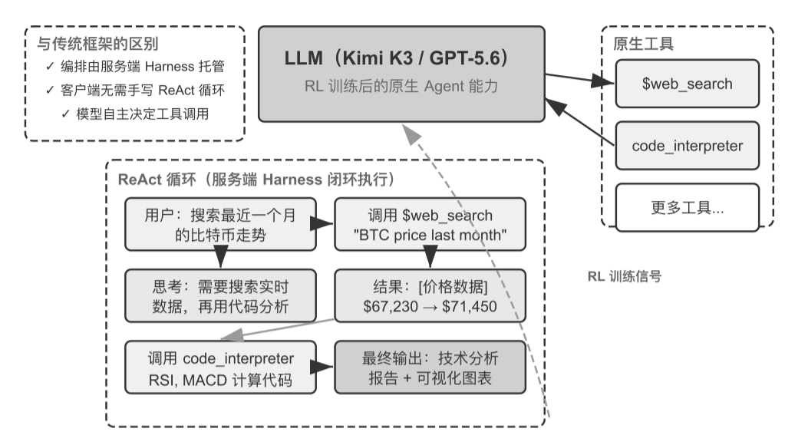

LLM：Agent 的决策内核
大语言模型不只是模型参数，而是 Agent 的整个决策核心——理解意图、思考规划、做出判断。
- 预训练能力：积累的世界知识与语言能力，构成理解与推理的基础
- 后训练策略：SFT 与强化学习固化的决策策略（详见第七章）
- 类比：大脑不仅靠神经元，还靠经验塑造的思维方式
理解现代 Agent，要从一个最小公式开始：Agent = LLM（大语言模型） + 上下文 + 工具。 这三个组件分别对应大脑、眼睛和手脚，共同构成 Agent 与外部环境闭环交互的最小结构。这个公式 只描述 Agent 边界之内的实现，不包含 Agent 与之交互的 Environment（环境）。 本节先给出公式与边界，再逐个拆解观察空间与动作空间、工具、LLM 与上下文，最后用 ReAct 循环演示三大组件如何协同完成一次真实任务。
现代 Agent 的最小工程实现可以表达为一个简洁的公式： Agent = LLM（大语言模型）＋ 上下文 ＋ 工具。
Agent = LLM（大脑）＋ 上下文（眼睛）＋ 工具（手脚）
“＋”表示工程组件的组合，而不是强化学习中的形式化定义；该公式只描述 Agent 边界之内的实现， Agent 交互的环境（Environment）不在其中。
大语言模型不只是模型参数，而是 Agent 的整个决策核心——理解意图、思考规划、做出判断。
上下文是 Agent 在每个决策点收到并保留的信息表示——来自环境的观察、用户记忆、领域知识、自身状态与任务进展。
工具指 Agent 用来感知或改变外部世界的接口，包括工具定义、调用协议和适配器。
如果把这些组件放进经典强化学习的框架，会发现它们并不严格一一等同，而是各有侧重：
| 直觉理解 | 实现组件 | 学术概念 | 含义 |
|---|---|---|---|
| 大脑 | LLM | 策略（Policy） | Agent 决定“下一步做什么”的决策逻辑——面对当前看到的信息，从所有可选行动中挑出最合适的一个 |
| 眼睛 | 上下文构造 | 观察与历史 | 将环境返回的观察与已有历史组织成当前决策所需的信息 |
| 手脚 | 工具与适配器 | 观察 / 行动接口 | 规定 Agent 可以读取哪些观察、发出哪些行动，以及接口采用什么格式 |
上下文是具体观察和历史在 Agent 内部的表示，并不等于整个观察空间；工具定义的是 Agent 可使用的观察与行动接口，工具背后的对象仍属于环境。

外层看，Agent 与 Environment 构成闭环：环境返回观察 → Agent 依已有上下文选择行动 → 行动改变环境状态 → 新状态产生下一次观察，循环继续。文件、数据库、网页、用户、其他 Agent 以及物理或仿真世界，都属于 Environment。
内层看，Agent 内部是 Model–Harness 结构：Model 负责策略决策；Harness 是 Agent 边界内环绕模型的运行与治理层——构造上下文、暴露工具接口、维护循环与状态，并实施权限、验证与纠正。LLM 对应 Model；“上下文 + 工具”构成最小 Harness，生产系统还会在 Harness 中加入约束、验证和纠正。
观察通道与动作接口共同构成了 Agent 与外部环境之间的边界。Harness 完成双向转换：把环境返回的观察转换为模型能够处理的上下文，再把模型选择的行动转换为对环境的工具调用。 没有进入上下文的信息，对模型来说就像不存在；没有被动作接口允许的操作，模型即使知道该怎么做，也只能停留在文字建议上。
在底层模型固定时，提升 Agent 任务表现最主要的系统工程手段，往往就是重新定义或扩展观察空间与动作空间——用本书的术语说，就是扩展上下文和工具。许多看似“需要更聪明模型”的问题，其实只是接口问题：把任务所需的数据纳入上下文，或把完成任务所需的操作封装成工具，原本不可解的任务就可能变得可解。
在 Manus 出现之前，生产级 Agent 大多沿着 Deep Research、Coding 和 Computer Use 三条相对独立的路线发展。Manus 的突破在于率先把三者放进同一个有广泛影响力的生产级 Agent（Manus 官方博客）。
OpenClaw 又把这两个空间向外推进了一层（OpenClaw 开源项目，工具文档）。
| Agent 产品 | 眼睛（感知） | 手脚（行动） | 策略 |
|---|---|---|---|
| Cursor 等Coding Agent | 需求、读取到的代码片段、目录列表、终端输出 | 开放式（代码搜索、文件读写、执行命令等） | 增量开发：理解需求 → 搜索相关代码 → 编辑代码 → 测试验证 → 调试修复 |
| Deep Research 等搜索 Agent | 搜索结果、网页内容、论文摘要与引用 | 开放式（搜索查询、网页读取、生成报告等） | 迭代深化：根据已有信息调整搜索方向，逐步综合出完整报告 |
| Browser Use 等电脑操控 Agent | 屏幕截图、DOM 或无障碍树、操作结果 | 开放式（点击、输入、滚动、截图、执行代码等） | 视觉感知 + 操作：观察屏幕 → 识别目标元素 → 执行操作 → 验证结果 |
| 豆包等手机助手 Agent | 手机截图、App 界面状态、系统反馈 | 开放式（点击、滑动、输入、打开 App 等） | 意图理解 + App 操控：理解用户需求 → 定位目标 App → 执行操作 → 确认完成 |
| Pine AI 等个人办事 Agent | 经授权读取的账户记录、账单结果、服务商资料 | 开放式（打电话、发邮件、填表单、与用户确认） | 多步骤任务执行：收集信息 → 制定协商策略 → 联系服务商 → 谈判 → 汇报结果 |
这些 Agent 系统有几个共同特征：它们都使用开放式的动作空间——不是从有限的几个按钮中选择，而是能生成任意自然语言和代码；它们都能内部思考——在采取行动前先思考和规划；它们都能持续交互——根据环境反馈不断调整策略。这些能力正是来自大脑、眼睛和手脚——即 LLM、上下文和工具——的协同作用。
工具是 Agent 与外部世界的桥梁：感知类工具承载“环境 → Agent”的观察，执行类工具承载“Agent → 环境”的行动。 这里把工具作为广义接口来讨论——指工具定义、调用协议与适配器，而不是把搜索引擎、文件系统、数据库或外部 API 服务本身划入 Agent。没有工具，Agent 只能“纸上谈兵”；有了工具，它才能真正读取或改变世界。
让 Agent 读取外部信息，变成上下文的一部分。
让 Agent 真正改变世界——决策变成实际行动。
与其他 Agent 或人类分工合作。
不是主动调用，而是外部输入驱动 Agent 开始任务。
主动与用户建立连接、传递信息。
工具调用是现代 LLM Agent 的一项核心能力：它让模型能够通过结构化的方式调用外部工具，从纯粹的文本生成器转变为能够执行实际操作的智能系统。以“查询天气”为例：
get_weather(city,
date)get_weather("北京", "今天")从任务所需的最窄能力起步，随复杂度逐步扩展。
支付、删除数据、发送邮件和生产部署等高风险或强业务约束操作，不应交给通用的万能工具。
工具设计质量直接决定 Agent 能走多远；MCP（Model Context Protocol，模型上下文协议）标准的推广，正在让工具接入变得更容易。
大语言模型（Large Language Model, LLM）是 Agent 的决策核心。收到用户的请求后，它需要先解析真实意图（用户说的往往不是他真正想要的）；再将模糊或复杂的任务拆解成可执行的步骤。执行过程中它还要持续做出判断： 下一步该做什么、要不要调用工具、调哪个工具、传什么参数。这种“理解-规划-执行”的能力来自预训练所积累的知识，是工作流和自主 Agent 都依赖的基础。
LLM 是 Agent 的整个决策内核，贯穿任务的每个决策点。
在采取实际行动之前，Agent 可以先进行规划与推演——这一过程不改变外部环境，却能显著提升后续行动的质量。
“模型即 Agent”这一新范式代表了 AI Agent 发展的最新方向。先进模型通过后训练（特别是强化学习）将工具调用能力内化为原生能力：何时调用工具、调哪个、传什么参数，都由模型自己决定，无需人工编排。
但这并不意味着框架层变得不重要了。恰恰相反，模型越强大，围绕模型构建的 Harness 就越关键。 “Harness”这个词原指马具——套在马身上的缰绳与挽具，不是为了限制马的奔跑能力，而是把这种力量引导到正确的方向上。模型是那匹强大但不可预测的马，Harness 则是把它的能力引导成可靠任务执行的工程外壳。模型自主决策的空间越大，出错时的影响面也越大，因此需要更精细的约束、验证和纠正机制来确保可靠性。
Rich Sutton 在《苦涩的教训》中回顾了 AI 研究七十年间反复上演的一幕：研究者一次次把自己对领域的理解编码进系统，短期见效，长期却总是输给能随算力与数据规模持续扩展的通用方法——搜索与学习。
方向认同，节奏务实：方向上不怀疑模型会持续“吃掉”Harness——工具调用、长程规划都曾靠外部编排，如今已是模型的原生能力；但训练以月计，模型无法一次内化真实业务中所有的约束与偏好——模型此刻的能力边界，就是 Harness 此刻的价值所在。Harness 工程不是对苦涩的教训的抵抗，而是这一教训在工程时间尺度上的实践：模型还做不稳的，Harness 先补上；模型每内化一层，Harness 就卸下一层，转而兜底新的能力前沿。
Agent 的行为改变不只发生在训练阶段。按照更新发生的位置和持续时间，可以把它理解为三条互补路径：

| 路径 | 主要载体 | 更新特性 | 角色 |
|---|---|---|---|
| 任务内：上下文适应 Context adaptation |
当前上下文 · 示例 · 状态 · 检索结果 | 即时、低成本；任务结束后不自动保留 | 临场适应 |
| 跨任务：外部产物更新 External artifacts |
知识文档 · Prompt / Skill · 程序 / Harness | 跨任务持久、可审计；依赖检索或工具调用被使用 | 可控积累 |
| 训练周期：模型参数更新 Parameter update |
模型权重 · SFT / 偏好训练 / RL | 高维能力、广泛泛化；训练与回归成本较高 | 能力内化 |
三条路径是不同时间尺度上的协同机制：上下文负责临场适应，外部产物负责可控积累，参数负责内化难以显式表达的能力。
上下文是 Agent 在每个决策点能看到的全部信息。就像一个人在做决策时需要看到桌上摊开的所有资料——任务说明、参考手册、之前的沟通记录、最新的数据——Agent 的上下文窗口就是它的“视野”。从 API 的视角看，每次调用 LLM 时的上下文由五个部分构成：前两项构成不变的静态前缀，后三项是随交互不断增长的动态消息历史。
与用户每次输入的提示词不同，系统提示词由开发者编写，在整个对话过程中保持不变——定义 Agent 的身份、权限和行为准则。
声明 Agent 可用工具的名称、功能描述和参数格式。
每次用户发来的消息，都会作为新的上下文组件加入对话。
模型之前生成的回复，最多包含三个部分。
Agent 框架执行工具后返回的结果。
最直接的验证方法是消融实验（Ablation Study）：就像医生诊断时逐一排除病因——先去掉 A 组件看系统是否还正常，再去掉 B 组件，以此类推。实验从五个部分中选取四个组件进行测试——系统提示词作为 Agent 的基本身份定义不参与消融。

| 缺失组件 | 可见后果 | 关键洞察 |
|---|---|---|
| 无工具定义 | 无法调用工具 | 丧失行动能力——工具定义是 Agent 行动能力的基础 |
| 无思考过程 | 决策不连贯 | 思考过程保留了做出之前决策的原因——丢失则前后决策互相矛盾 |
| 无历史记录 | 重复操作 | 等于失忆——从头重跑，并重复已完成过的步骤 |
| 无工具结果 | 盲目循环 | 看不到上一步反馈，反复调用同一个工具，陷入死循环 |
Agent 只能基于它看到的信息做决策。就像一个人蒙住眼睛就无法做出合理判断一样，缺失任何一个上下文组件，Agent 的决策能力都会严重退化——看不到工具定义就不知道有哪些工具可用，看不到之前的执行结果就不知道已经做过什么。
了解了 Agent 的三大组件后，一个自然的问题是：它们如何协同工作？ReAct 循环就是将 LLM、上下文和工具串联起来的核心机制。
ReAct（Reasoning + Acting）是 Agent 执行任务的核心模式。虽然名字只体现了思考（Reasoning）和行动（Acting）两个词，但实际循环包含三个环节：模型先思考当前应该做什么，然后调用工具行动，再观察工具返回的结果并继续思考下一步。
这个“想 → 做 → 看 → 想 → 做 → 看”的循环不断重复，直到任务完成。而每次循环产生的消息——模型回复与工具结果——都会沉淀进上下文，构成不断增长的轨迹（trajectory）。
Agent 的上下文 = 静态前缀（系统提示词 + 工具定义）＋ 轨迹（用户消息 + 模型回复 + 工具执行结果）
每次调用 LLM 时，框架自动把静态前缀拼接在轨迹前面——静态前缀在对话中保持不变，轨迹则随交互不断增长。
轨迹是 Agent 在执行任务过程中不断积累的消息历史——用户消息、模型回复（包括思考过程和工具调用）、工具执行结果。每一次调用 LLM 时，它接收的完整上下文由静态前缀 + 轨迹两部分组成。
下面以“汇总四个季度的多币种收入”为例，展示 ReAct 循环中一条完整轨迹的结构。注意轨迹中不含系统提示词与工具定义——它们作为静态前缀，在每次 LLM 调用时被自动拼接在轨迹前面。
# 轨迹结构：多币种收入汇总任务（ReAct 循环）
trajectory = [
# 用户消息
{"role": "user",
"content": "根据公司季度收入：Q1 2.5M 美元，Q2 2.1M 欧元，Q3 1.8M 英镑，Q4 380M 日元，"
"计算公司年度总收入和季度平均收入"},
# 第 1 次迭代 —— LLM 看到上述轨迹，生成响应
{"role": "assistant",
"reasoning": "需要将所有货币转换为 USD...",
"content": "",
"tool_calls": [
{"name": "convert_currency", "args": {"amount": 2100000, "from": "EUR", "to": "USD"}},
{"name": "convert_currency", "args": {"amount": 1800000, "from": "GBP", "to": "USD"}},
{"name": "convert_currency", "args": {"amount": 380000000, "from": "JPY", "to": "USD"}},
]},
# Agent 框架执行工具，把结果追加到轨迹
{"role": "tool", "content": "EUR->USD: 2282608.7"},
{"role": "tool", "content": "GBP->USD: 2278481.01"},
{"role": "tool", "content": "JPY->USD: 2541806.02"},
# 第 2 次迭代 —— LLM 看到完整轨迹，包括工具结果
{"role": "assistant",
"reasoning": "已获得转换结果，现在需要汇总计算...",
"content": "",
"tool_calls": [
{"name": "code_interpreter",
"args": {"code": "total = 2500000 + 2282608.7 + 2278481.01 + 2541806.02"}},
]},
{"role": "tool", "content": "Total: $9,602,895.73, Average: $2,400,723.93"},
# 第 3 次迭代 —— LLM 看到完整轨迹，生成最终答案
{"role": "assistant",
"reasoning": "所有计算完成，总结结果...",
"content": "FINAL ANSWER: 总收入 $9,602,895.73，季度均值 $2,400,723.93"}
]
# 注意：轨迹中不含系统提示词与工具定义——它们作为静态前缀，
# 在每次 LLM 调用时被自动拼接在轨迹前面。
理解了 Agent 的运行循环后，让我们通过两个实验来感受不同模型如何驱动这个循环。

Kimi K3 是约 2.8 万亿参数的混合专家（MoE）模型，拥有 100 万 token 的上下文窗口、原生的视觉理解能力，以及始终开启的“思考模式”。模型通过强化学习训练，把“何时调用工具、调用哪个、传什么参数”的决策策略内化为原生能力，从而能够自主完成网络搜索等任务。其突出优势是长链工具调用的稳定性——连续执行 200～300 次工具调用而保持思考一致性。
模型“通过强化学习训练，将工具调用能力内化为原生能力，不需要额外的编排层”。更准确的说法是：RL 内化的只是决策策略——何时搜、搜什么、如何判断、拿到结果后是否继续、如何把几十上百次调用串联成连贯推理；而 web_search、code_runner 等 “Official Tools” 的执行机制并未改变——它们是通过 Formula 系统（API 层面的 server-side Python 脚本引擎）实现的。
Formula 的调用流程：模型输出标准 tool_calls JSON → 客户端调用 POST /formulas/{uri}/fibers → Formula 服务端执行 → 结果回传。Kimi 官方文档原文：“Formula is a lightweight script engine collection. the platform handles everything else like startup, scheduling, isolation, billing, recycling”。
这些是 API 层面的内置工具，和 OpenAI Responses API 的 web_search / code_interpreter 同理。编排循环并没有消失，而是从客户端移到了服务端，同时决策权交给了模型。
Deep Research 能力“内化到了模型层面，不再依赖外部编排框架”。更准确地说：GPT-5.6 的 web_search、code_interpreter 是 Responses API 的内置工具：
response = client.responses.create(
model="gpt-5.5",
tools=[{"type": "web_search"}], # API 层面的工具声明
input="BTC price last month"
)
# 模型仍输出 tool_calls，由 API 服务端闭环执行：
# 搜索 → 阅读 → 分析 → 再搜索，迭代研究在服务端完成
编排循环只是从客户端移到了 API 服务器，并没有消失——模型仍输出 tool_calls，由服务端闭环执行。
原书说自由格式工具调用（Freeform Tool Calling）允许模型“直接向工具发送原始内容，省去了格式转换的麻烦”。实际机制是：GPT-5 引入了 "type": "custom" 工具类型，arguments 字段从 JSON string 变成 raw text。
{"type": "custom", "name": "code_exec", "description": "..."}，无需 JSON schema{"type": "custom_tool_call", "input": "print(\"hello world\")"}更值得注意的是意图澄清：当用户提出研究需求后，GPT-5.6 不会立即动手执行，而是首先通过一系列问题来澄清用户的真实意图。这让“用户说了什么”和“用户真正想要什么”之间的差距，在任务执行之前就得到了弥合。